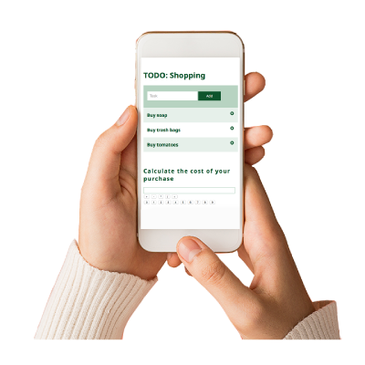

TODO (mobile version)
Todo was an old group project we did in my last studies ( Here is a link to the old project). I really liked the project and wanted to redo it to apply my new gained skills and practice using forms, templates and databases. TODO is a place where people who live together can share (in form of todo lists) what needs to be done around the house and tasks can be distributed. Every tenant can edit all the todo lists and write notes and receipts.
Process
I planned on what features to use. Therefore I had a look at the old
project. I was thinking about some new ideas as well. Afer
considering all the ideas I sketched a layout. I decided to use
Javascript, HTML, CSS and Rest DB and change it to a mobile version
this time. I started to code all the features that I wasn’t sure of
how to code. So in case I couldn't make the features work, I could
still make some changes. After doing so, I added additionalfeatures
on top and coded the rest of it.
For the design I wanted to use only very little color. These are the
only two colors I used besides white.
Solution
I used Javascript, HTML and CSS for this project as well as Rest DB. I created 7 collections to store the data in total. Here is a link to GitHub and here is a link to the mobile website .
Thoughts
I have a better understanding of forms and Rest DB as a database (coding and styling wise) now. I also learned how to code some new features along the way, which is great.